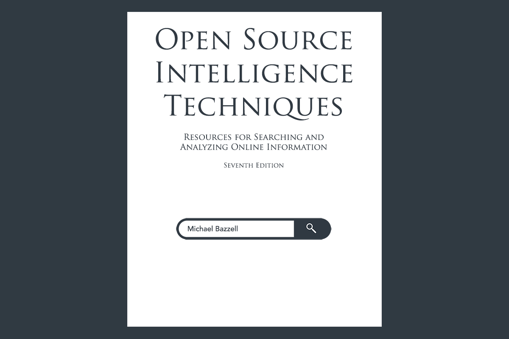

|
Open Source Intelligence Techniques Seventh Edition By Michael Bazzell  Please click HERE for more information or to purchase the book Your purchase directly supports this free tool
It is time to look at OSINT in a different way. For many years, we have relied on external resources to supply our search tools, virtual environments, and investigation techniques. We have seen this protocol fail us when services shut down, websites disappear, and custom resources are dismantled due to outside pressures. This book aims to correct our dilemma. We will take control of our investigative resources and become self-reliant. There will be no more need for online search tools; we will make and host our own locally. We will no longer seek pre-built virtual machines; we will create and configure our own. This book puts the power back in your hands. The new OSINT professional must be self-sustaining and possess their own tools and resources. You will become a more proficient subject matter expert who will be armed with the knowledge and readiness to articulate the sources of your findings. Aside from eleven brand new chapters, hundreds of pages have been updated to keep your OSINT investigative methods fresh. Furthermore, an entire new section featuring Methodology, Workflow, Documentation, and Ethics provides a clear game plan for your next active investigation. All-new custom search tools, report templates, and detailed documents are included via download. Today, we start over.
|